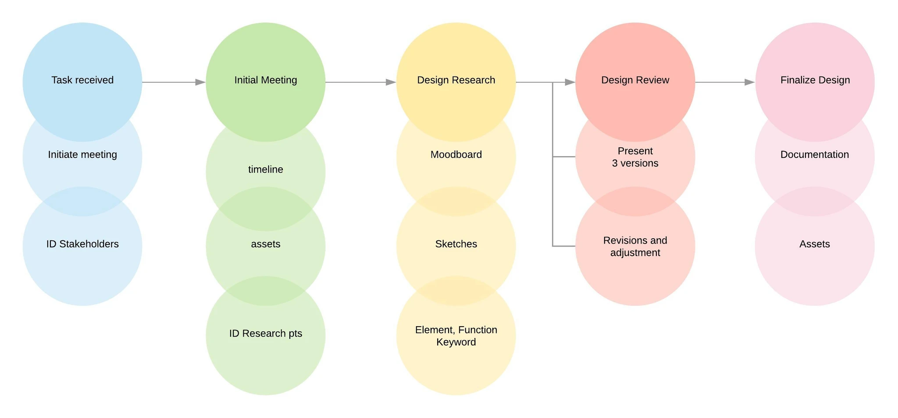
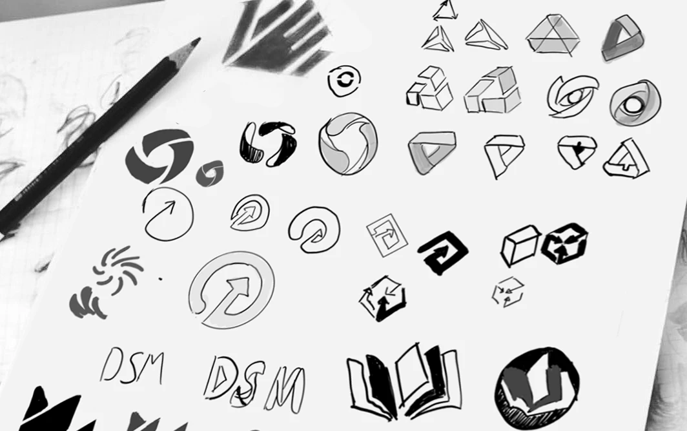
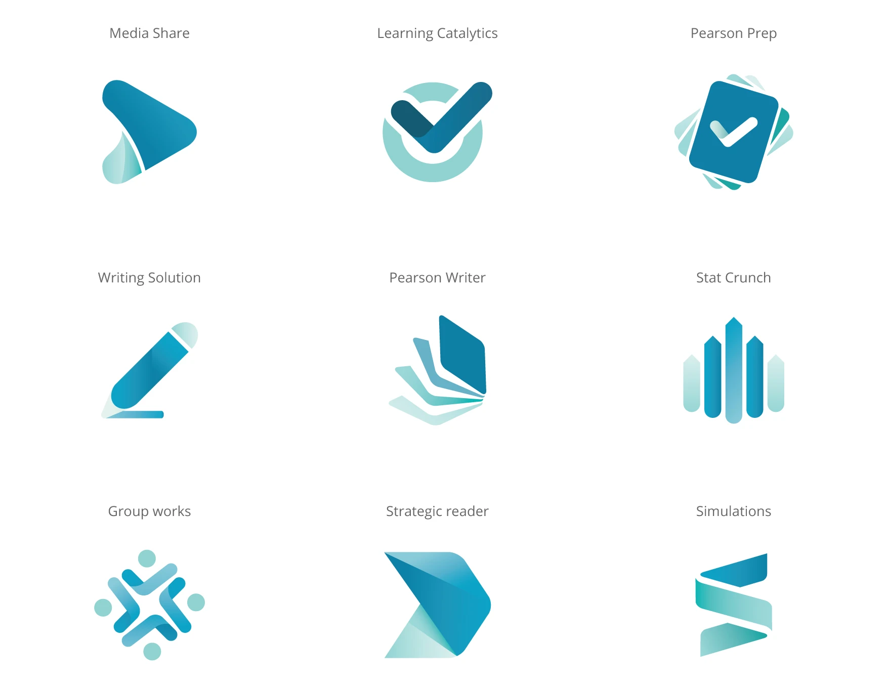
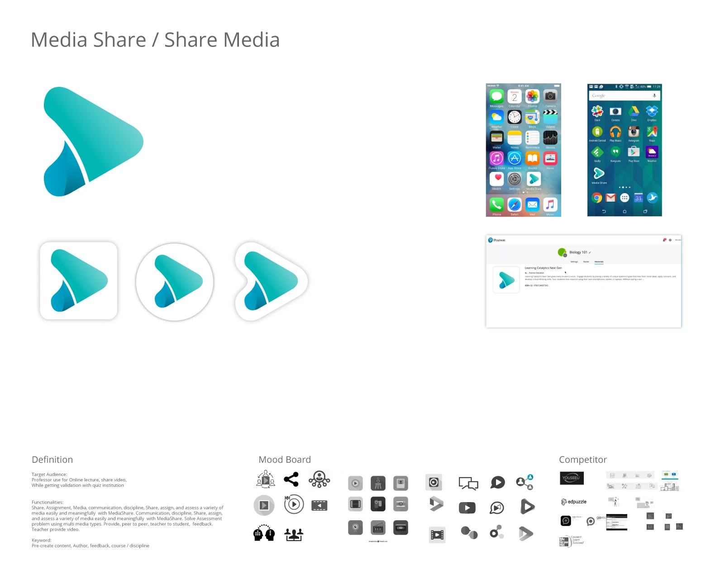
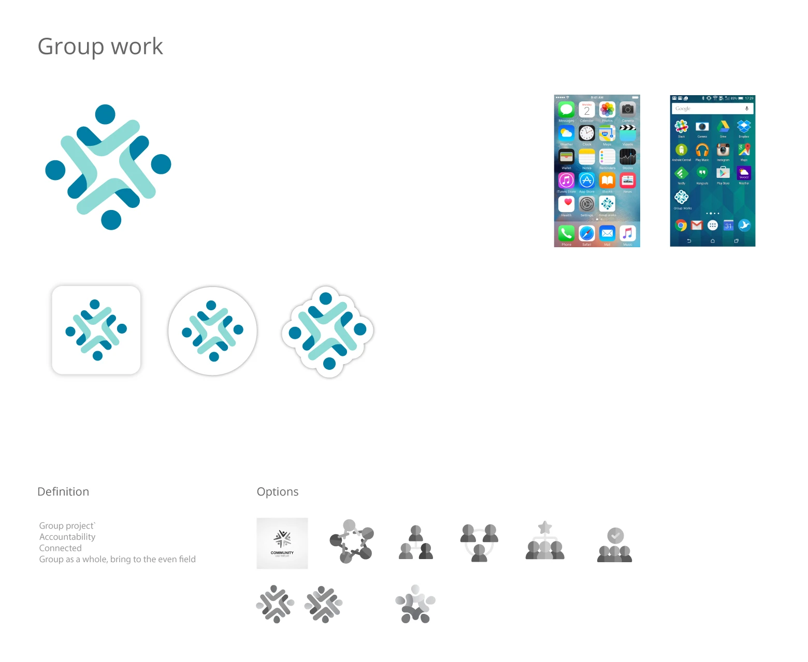
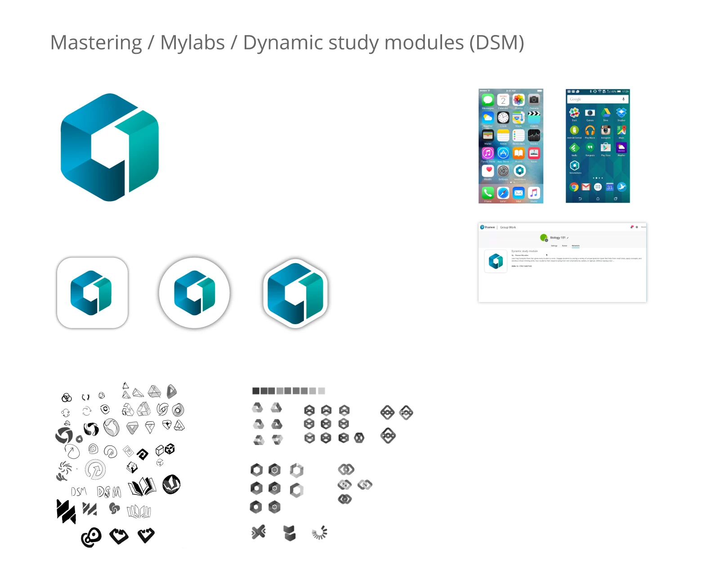
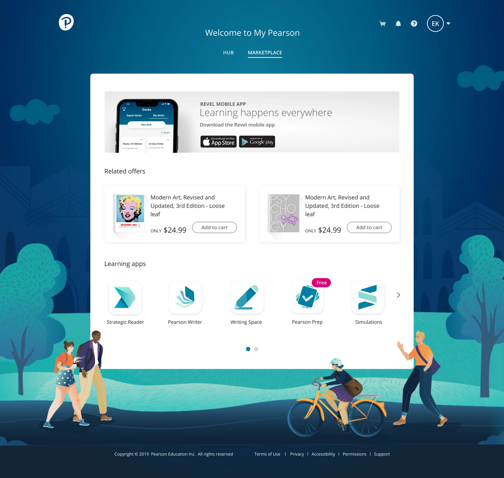

Unify Apps Visual Language
Bringing the Learning Apps product family visual consistency and funding

Product Overview
The Learning Apps product organization did not have consistent branding and color treatment. Each product design expressed gaps in creating design without defined colors and visual language — this created many excessive meetings for each product team.
Proposal
With the challenge of product and marketing alignment, I approached the product and design directors to propose a once-for-all effort to create visual branding for each app. I produced a branding roadmap and timeline.

Proposed roadmap that leads to an approximate timeline.
Approach
I decided to take on the whole product family to ensure consistency in branding and style. The key was strictly creating a comprehensive presentation and demo that presented key evidence on the design rationales. Once getting sufficient colleague input and the managing director's buy-in, we moved forward.

Proposed Design
The proposed design ensures the product's fundamental functions are intuitive. The color palette is based on company branding. The graphic language focuses on depth and a modern look using gradients and white space to create a three-dimensional feel.

Proposed design using the company branding color palettes for consistency.
Create Individual Logo Deck
The next effort was to identify the key stakeholders and have focused meetings to get feedback. The initial logos were reviewed and approved within 2 months. Final branding specs, assets, and preliminary product home pages were produced in 1 month.

Media Share: Focused the media with play icon.

Learning Catalytic: Focus on validation with response from fellow learners and instructors.

Group Work: Framing on the collaboration with individuals, with subtle hints at 'checkmark' iconography.

Dynamic Study Modules: Focus on 'dynamic' aspect, with hints at study using book depiction.
Results
The branded app logos helped produce a unified product page and marketing page for each app. The product team presented the app lineups in many demos to upper management and gained traction and funding for further development of each app.
Each app's product designers were able to efficiently produce designs with defined color palettes and visual language. The branding effort was very well received and celebrated by the product and design organization.

New branded App Icons appear on the My Pearson website.